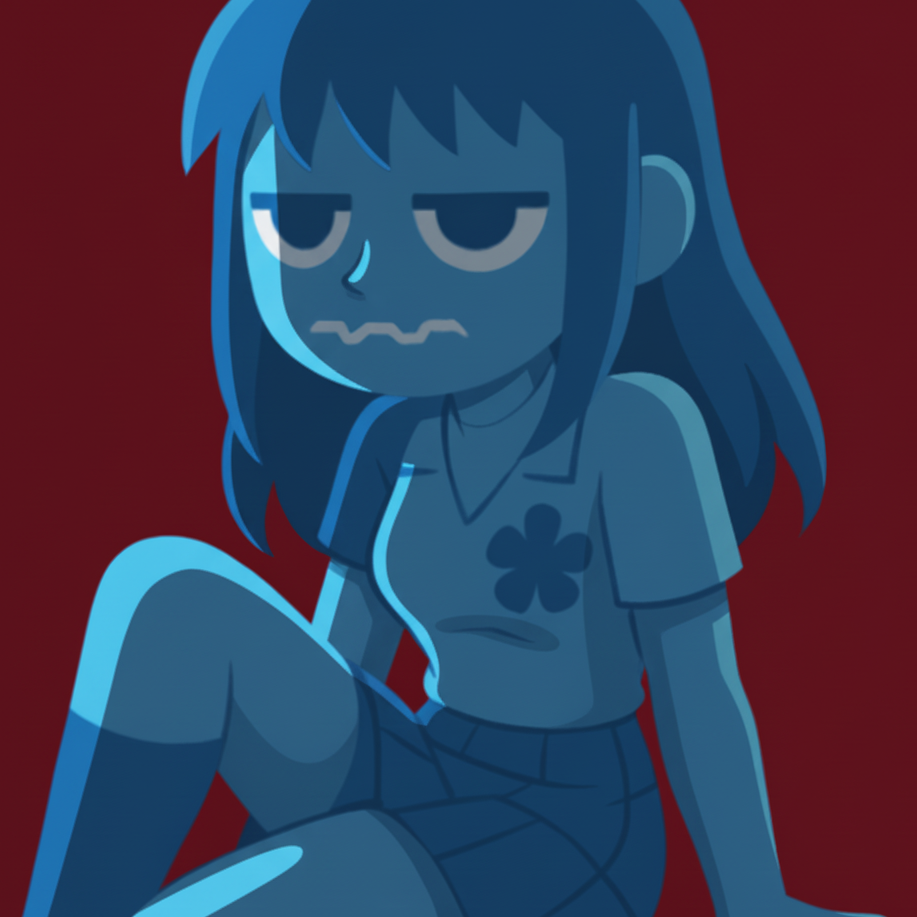

I make things
to play with.
Mostly games. Sometimes the tools, mods, and art that happen along the way.
Art that found its way here.
Illustration, character studies, and a few things that move.
Tools I wanted to exist.
Small apps for making art, music, and useful things from data.
Little things that make games better.
Stardew Valley mods and RPG Maker MZ plugins I made because I wanted them.

Hey, I'm CodeKokeshi.
I started making games in RPG Maker, tried Unity, and found my way to Godot. Somewhere along that route I picked up pixel art, animation, modding, and a habit of building my own tools.
This place is a mix of finished projects and experiments. I like showing the attempts, too.